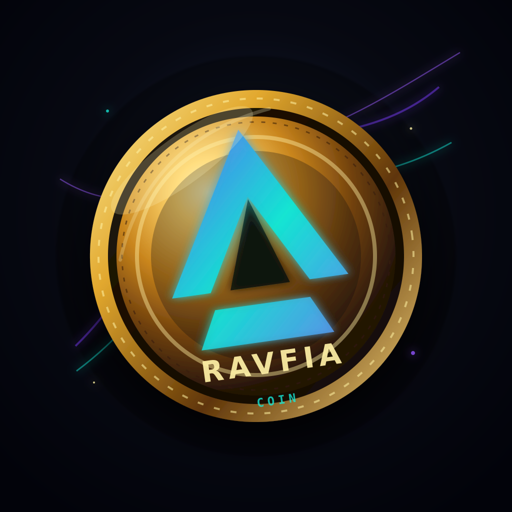

AI
Unrestricted models
Supporting open availability, practical use, scientific understanding, and popular understanding of language-model systems.
Kacm Network, founded by Kurt Morales, trains world-class open-source language models and builds infrastructure for distributed, unbiased training — while advancing a Solana network and Ravfia Coin.
Supporting open availability, practical use, scientific understanding, and popular understanding of language-model systems.
Infrastructure for coordination, fairness, reproducibility, and unbiased model development across independent contributors.
A Solana-first token initiative and network direction for fast, public, programmable digital systems.
Exploring efficient architectures, modular systems, and deployable model designs for open language intelligence.
Generating and refining datasets that improve reasoning, tool use, coding ability, alignment, and domain coverage.
Adapting open models for real tasks with transparent recipes, repeatable training runs, and useful evaluation loops.
Building stronger chains of thought, planning, agentic workflows, and verifiable problem-solving capabilities.
borjax-mono is the active public monorepo for Kacm Network's open-source AI and Solana direction — the foundation where agent tooling, infrastructure, and Ravfia Coin network work can evolve in public.
Ravfia Coin is the Solana Token-2022 initiative referenced by the local ../ravfia-coin project. It is designed as a fixed-supply RFCN token with mint and freeze authorities revoked at mint time.
